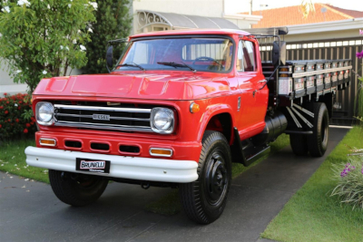

O começo da era dos caminhoneiros.
A História dos caminhoneiros conta com vários percalços e lutas.Muitos nem imaginam o percurso desses
profissionais.A vida sobre quatro rodas sempre contou com dificuldades,e mesmo com o passar dos anos
isso sempre foi de conhecimento do governo nacional e de seus orgãos reguladores.
Mas você deve estar se perguntando quando isso começou? Bom,durante boa parte da
segunda metade do seculo 20,com mais destaque na ditatura-civil-militar(1964-1985),o caminhoneiro
ganhou espaço nas propagandas promovidas pelo gorverno.
Associadas à imagem de progresso e do futuro,as peças buscavam incentivar a profissão de maneira geral.As
propagandas da ditatura eram marcadas por grandes caminhões que desbravavam as novas estradas abertas do
país,sendo alguma delas míticas como a transamazõnica.
Por esses motivos junto dos muitos beneficios adicionados a essa profissão dados pelo regime,que se ouve
esse grande bom de caminhoneiros no Brasil.
Os caminhões mais marcantes.
Chevrolet D-60.

Com certeza, você já deve ter visto um caminhão Chevrolet D-60 com cargas mais simples, como móveis e
materiais de construção. Esta relíquia já esteve muitas vezes na lista de mais vendidos do Brasil e, até
hoje, é muito usada para o transporte de diversos tipos de cargas. Os caminhões Chevrolet no Brasil
tiveram importante participação na história do transporte e na popularização do veículo pelas estradas
do país, já que foi uma das primeiras montadoras a chegar em terras brasileiras ainda em
desenvolvimento.
Considerado o primeiro caminhão 100% nacional da Chevrolet, o modelo D-60 era facilmente encontrado sendo
utilizado como um caminhão de gás (principalmente em cidades do interior), fazendo serviços para
depósitos de construção, no carregamento de sacos de areia, sacos de cimentos, e outros materiais, ou
atuando com fretes e mudanças. Seja como for, com certeza você conhece esse modelo que rodou, e ainda
roda, principalmente, por cidades do interior do país, onde o tráfego de grandes caminhões é mais
difícil.
Mercedes Benz L 1113

Muitos modelos novos vem ganhando espaço na frota atual do Brasil, Scania R440 ou Volvo FH 540 lideraram
as vendas nos últimos anos. Porém, todos eles, estão longe de bater os números do lendário Mercedes-Benz
L 1113.
O MB 1113, acumulou nada mais, nada menos, que 200 mil unidades até o ano de 1987. Para comparativo, no
ano de 2018 foram vendidos 34.736 mil caminhões – isso somando todas as marcas juntas
Mas porquê esse modelo foi tão vendido?
Sucessor do Mercedes-Benz 1111, o L 1113 começou a ser fabricado em 1969 com a mesma cabine que seu
antecessor, porém com um motor mais potente e tecnológico. Composto por seis cilindros 5.7 de 147 cv e
41
mkgf de torque, se destacando entre os demais concorrentes.
Mas o diferencial do modelo foi a inclusão de uma cabine suspensa por molas e dois amortecedores de
dupla
ação, o que garantia o conforto que nenhum outro caminhão da época já tinha oferecido.
Mas porquê esse modelo foi tão vendido?
Sucessor do Mercedes-Benz 1111, o L 1113 começou a ser fabricado em 1969 com a mesma cabine que seu
antecessor, porém com um motor mais potente e tecnológico. Composto por seis cilindros 5.7 de 147 cv e
41 mkgf de torque, se destacando entre os demais concorrentes.
Mas o diferencial do modelo foi a inclusão de uma cabine suspensa por molas e dois amortecedores de
dupla ação, o que garantia o conforto que nenhum outro caminhão da época já tinha oferecido.
Mercedes Benz L 1620

Ao chegar no mercado brasileiro em 1996, o L-1620 da Mercedes-Benz tinha uma grande responsabilidade:
suceder a história de sucesso do L-1113 que, por mais de 20 anos, figurou entre os modelos semi-pesados
mais vendidos do país.
O bruto cumpriu sua tarefa e foi o campeão de vendas da marca alemã até o final da sua produção, em
2012. O L-1620 tinha um motor de 6 cilindros turbo, 211 cv, torque de 71 kgfm e ainda é um dos modelos
preferidos dos caminhoneiros.
Compartilhe este post nas suas redes sociais e ajude a manter viva a memória desses caminhões antigos
que marcaram a vida de tantos brasileiros. Afinal, recordar é viver!